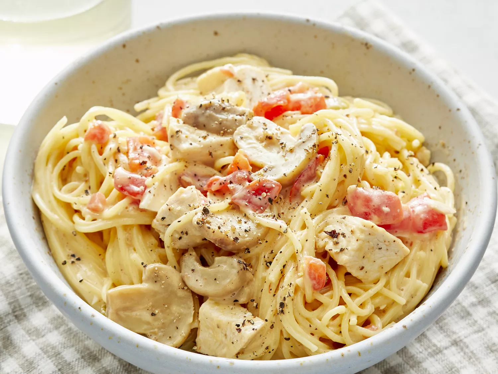

Pasta

This is a simple pasta recipe. It can be a great option for dinner.
Ingredients:
- Package of pasta
- Chopped chicken breast
- Condensed chicken soup cream
- Diced tomatoes with green peppers
- Cubed processed cheese
- Sliced mushrooms
- Salt and pepper
Steps:
- Boil a pot of salted water and cook pasta until soft.
- Remove water and add chicken, condensed soup, diced tomatoes, peppers, processed cheese, mushrooms, salt, and pepper.
- Boil until the cheese melts and all of the ingredients are properly heated.